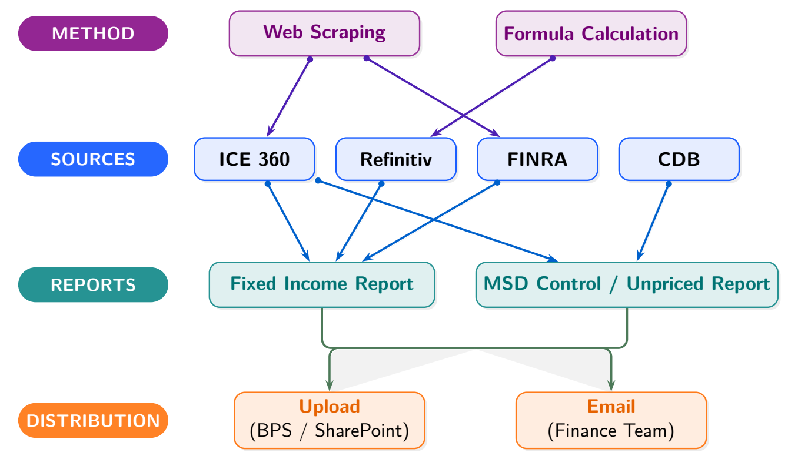

Broadridge
An end-to-end price control and exception pipeline that carries market data from vendor feeds through validation, BPS updates and daily reporting.
The daily process checks Broadridge BPS records across customer and firm accounts against CommonDB and external feeds from ICE 360, Refinitiv and FINRA. It flags missing prices and differences greater than 10% across equities, options and fixed income. The workflow also applies house-pricing rules, handles USD conversion, and adjusts its schedule around US market holidays so the first business day after a closure does not trigger empty checks.
For fixed-income securities without an internal price, the pipeline follows a vendor fallback sequence: ICE 360 first, then Refinitiv, then FINRA. It matches security identifiers in SEDOL, CUSIP and ISIN order, converts foreign prices to USD using spot FX, and records clear exception states when no valid quote is available. A companion control path retrieves option prices using OCC OSI identifiers and applies the same validation and currency rules to control and unpriced reports.

After validation, daily house prices are uploaded to BPS with expiration rules for active and inactive securities and multiplier corrections for selected structured instruments. The process then formats the control files, sends the MSD Control, MSD Unpriced and Fixed Income Missing Price reports to Finance, and archives the finalized copies in the Operations SharePoint folder.
For larger runs, I redesigned the scraper to extract records in batches directly in the browser and save progress after each 100 securities. If a network interruption occurs, the next run resumes from the last saved security instead of restarting. Clear Excel and text logs make the run visible to teammates, who can launch it through a simple batch file. The optimized scraper runs in about one quarter of its former time, and its output was checked line by line against the existing process for two weeks before adoption.
The complete workflow saves about 40 minutes each day and supports team handover through shared run instructions, logs and archived reports.